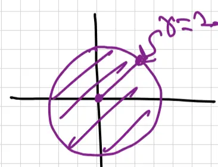
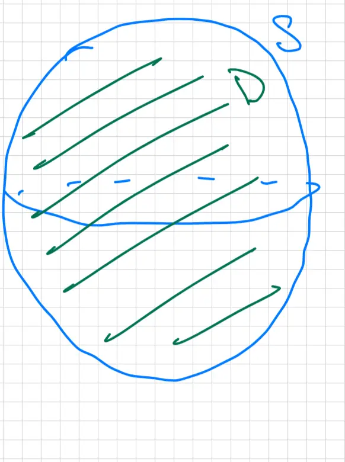

Lesson 37: Divergence Theorem - II
Announcements:
- Final exam – Tuesday, May \( 5^{\text{th}} \), 1pm – 3pm
- Cumulative (Lesson 1 – 37)
- No class on Friday (04/24)
- No office hours on 04/23, 04/24
Accessible transcription generated on 4/22/2026
Announcements:
![A hand-drawn technical diagram illustrating the geometric setup for the Divergence Theorem. It shows an irregular, three-dimensional solid region shaded in green, representing the volume D. This volume is completely enclosed by a blue boundary line representing the closed surface S. Several black arrows originate from different points on the blue surface and point directly away from the green interior, representing the outward-pointing normal vectors. The diagram conveys the relationship between a solid region and its oriented boundary surface.](img/lesson-37-1.webp)
\( S \) is a closed surface with outward normal and \( D \) is the solid region enclosed.
\[ \iiint_D \text{div} \vec{F} dV = \text{flux through boundary} = \iint_S \vec{F} \cdot d\vec{S} \]In this equation, the term \(\iiint_D \text{div} \vec{F} dV\) is a regular triple integral. To compute the surface integral \(\iint_S \vec{F} \cdot d\vec{S}\), you must parametrize \( S \):
\[ = \iint_{\substack{u,v \\ \text{Bounds}}} \vec{F}(\vec{r}(u,v)) \cdot (\vec{r}_u \times \vec{r}_v) dA \]
eg: \( S \) is the closed surface shown below
\( \vec{F} = \langle \sin z - 3x^2, 3xy, \cos x + e^y + 4xz \rangle \rightsquigarrow \text{div} \vec{F} = -6x + 3x + 4x = x \)
evaluate \( \iint_S \vec{F} \cdot d\vec{S} \)
![A 3D coordinate system (x, y, z axes) illustrating a solid region D. The region is bounded above by a paraboloid with the equation z = 6 - x^2 - y^2 and below by a cone with the equation z = sqrt(x^2 + y^2). The volume between these two surfaces is shaded with green diagonal hatch lines. A red vertical line segment is drawn between the lower cone surface and the upper paraboloid surface to indicate the vertical range of z at an arbitrary point (x, y). Below the 3D solid, the projection of this region onto the xy-plane is depicted as a purple shaded disk.](img/lesson-37-2.webp)
Applying divergence theorem \[ \iint_S \vec{F} \cdot d\vec{S} = \iiint_D \text{div} \vec{F} \, dV = \iiint_D x \, dV \]
\[ \sqrt{x^2 + y^2} \leq z \leq 6 - x^2 - y^2 \]
\( xy \) lie in the shadow which is a disk with boundary intersection of \( 6 - x^2 - y^2 \) & \( \sqrt{x^2 + y^2} \)
Using polar: \( x^2 + y^2 = r^2 \) \[ 6 - r^2 = \sqrt{r^2} = r \] \[ \Rightarrow r^2 + r - 6 = 0 \rightsquigarrow (r+3)(r-2) = 0 \] \[ \underline{r = 2} \]

\[ \left. \begin{aligned} 0 \leq r \leq 2 \\ 0 \leq \theta \leq 2\pi \end{aligned} \right\} r \leq z \leq 6 - r^2 \]
Using cylindrical
\[ = \int_{0}^{2\pi} \int_{0}^{2} \int_{r}^{6 - r^2} r \cos \theta \cdot r \, dz \, dr \, d\theta \]Observe:
\[ \int_{0}^{2\pi} \cos \theta \, d\theta = \sin \theta \bigg|_{0}^{2\pi} = 0 \]
Eg: \( S \) is a sphere of radius 2, \( \vec{F} = \langle x+xz, y+yz, -x^2-y^2-z^2 \rangle \).
Compute flux.

\[ \text{flux} = \iint_{S} \vec{F} \cdot d\vec{s} = \iiint_{D} \text{div} \vec{F} \, dV \]
(div theorem)
\[ \text{div} \vec{F} = (1+z) + (1+z) + (-2z) = 2 \]
\[ = \iiint_{D} 2 \, dV \] \[ = 2 \iiint_{D} 1 \, dV = 2 \times \text{Volume of } D \] \[ = 2 \times \frac{4}{3} \pi (2)^3 \] \[ = \frac{64\pi}{3} \]

![A 2D cross-sectional diagram illustrating a region D defined as the volume between two concentric spheres. The outer sphere is represented by a large blue circle, while the inner sphere is represented by a smaller purple circle. The annular region between these two circles is shaded with green diagonal hatching and is labeled with the letter 'D' at the top. A dashed horizontal line passes through the centers of both circles, representing their shared equatorial plane. This visualizes a spherical shell with an inner radius of 1 and an outer radius of 2.](img/lesson-37-6.webp)
Bounds of D in Spherical coordinates:
\[ \begin{cases} 1 \le \rho \le 2 \\ 0 \le \phi \le \pi \\ 0 \le \theta \le 2\pi \end{cases} \] \[ \iiint_D \text{div} \vec{F} \, dV = \int_0^{2\pi} \int_0^{\pi} \int_1^2 \text{div} \vec{F} \cdot \rho^2 \sin \phi \, d\rho \, d\phi \, d\theta \]\[ \int_a^b f(x) \, dx = \int_a^c f(x) \, dx + \int_c^b f(x) \, dx \]
\[ \int_0^2 = \int_0^1 + \int_1^2 \implies \int_1^2 = \int_0^2 - \int_0^1 \]
(Bounds for outer sphere) (Bounds for inner sphere)
\[ = \iiint_{\substack{\text{Sphere of} \\ \text{Radius 2}}} \text{div} \vec{F} \, dV - \iiint_{\substack{\text{Sphere of} \\ \text{Radius 1}}} \text{div} \vec{F} \, dV \]![A technical diagram illustrating the Divergence Theorem applied to a hollow spherical region D. The region D is the space between two concentric spheres and is shaded with green diagonal lines. The outer surface is labeled S₁ and has a red arrow pointing radially outward, indicating an outward-pointing normal vector. The inner surface is labeled S₂ and has a red arrow pointing radially inward toward the center, indicating an inward-pointing normal vector relative to the origin, which is consistent with the orientation for the boundary of the region D. The inner sphere is drawn with dashed lines to show its spherical volume.](img/lesson-37-7.webp)
Boundary of \(D\) is:
![A technical diagram illustrating the Divergence Theorem for a three-dimensional region with a cavity. It depicts a large blue wavy closed loop representing the outer boundary surface S1, with a red arrow indicating an outward normal vector. Nestled inside is a smaller purple wavy closed loop representing the inner boundary surface S2, with a red arrow pointing inward toward the cavity's center. The space between S1 and S2 is marked with green diagonal hatching to designate the region D. Handwritten labels clarify: 'D is region in 3D with Boundary S1 and S2', 'S1 outer boundary with Normal outward', and 'S2 inner Boundary with Normal inward'.](img/lesson-37-8.webp)
\( D \) is region in 3D with Boundary \( S_1 \) and \( S_2 \)
\( S_1 \): outer boundary with Normal outward
\( S_2 \): inner Boundary with Normal inward
Want to find \(\iint_S \vec{F} \cdot d\vec{S}\)?
Is \(S\) a closed surface?
Yes:
No:
Is it a curl field? i.e., \(\vec{F} = \text{curl} \vec{G}\)
Yes:

No:
Use parametrization.